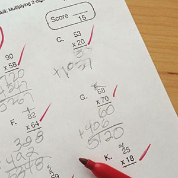
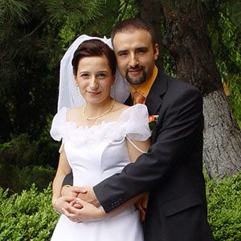
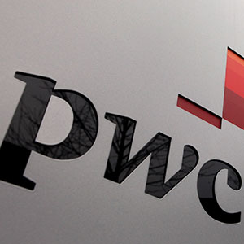
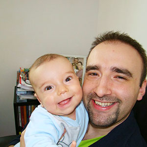
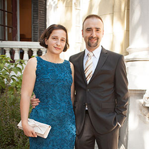
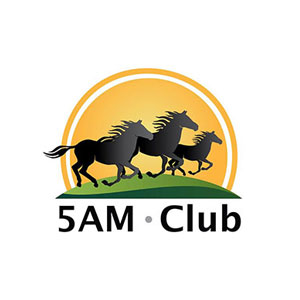
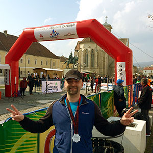

5AM Business Mastermind
" Este ca și cum ai avea 5 antreprenori, un geniu în creșterea afacerilor și un maestru în productivitate... angajați să îți crească afacerea " - Alin Matei
" Mi-am reorganizat activitatea, astfel încât prin delegări inteligente să reușesc să reduc săptămâna de lucru la 3-4 zile/săptămână, cu rezultate similare perioadelor în care lucram 6 zile pe săptămână. " Cristian Budău, Dezvoltator Imobiliar
Ce este 5AM Business MasterMind?
5AM Business MasterMind este un program de accelerare a afacerilor în care iau parte 6 antreprenori și 2 mentori. Cei 2 mentori sunt Dan Luca (expert în productivitate și lifestyle) și Răzvan Căzănescu (antreprenor și consultant de business și marketing).
" Cred că un MasterMind îți oferă acea creștere exponențială pe care creierul nostru nu reușește să o perceapă clar. Pentru că timpul mi-a devenit un prieten bun, mintea mă sprijină fără efort, continui să muncesc cu bucurie și trăiesc în fiecare moment dublul celui dinainte. " Elena Lotrean - Turism, Fashion, Training Corporate
Cate probleme ai?
Noi rezolvam 99 din ele!
management, vanzari, marketing, leadership, productivitate, relatii, crestere, financiar, recrutare
99. Fac foarte multe lucruri neimportante și foarte puține importante
Cum să îți găsești "abilitățile geniale" și să delegi sau să renunți la restul
Am rezolvat problema de 95 ori in 21 industrii diferite
98. Dacă eu nu sunt prezent echipa nu obține rezultate
Cum să delegi astfel încât compania să aibe rezultate fără prezența ta
Am rezolvat problema de 78 ori in 23 industrii diferite
97. Costurile pentru achiziționarea unui client nou sunt foarte mari
Cum să creezi un produs cu preț mic pentru a crește rata de conversie din prospecți în clienți, pentru ca apoi să le vinzi produse mai scumpe
Am rezolvat problema de 29 ori in 11 industrii diferite
96. Lucrurile nu se fac aproape niciodată la timp
Cum să pui termene care se respectă în 95% din cazuri
Am rezolvat problema de 64 ori in 18 industrii diferite
95. Nu am zile libere pentru că am prea multe de făcut și rezolvat
Cum să îți faci un program săptămânal care nu te va duce niciodata la epuizare și care nu va încetini creșterea companiei tale
Am rezolvat problema de 89 ori in 21 industrii diferite
94. Este imposibil să îmi țin angajații fericiți și să îi forțez peste limite
Cum să creezi o cultură de creștere în companie, astfel încât oamenii să accepte cu zâmbetul pe buze provocări nerezonabile
Am rezolvat problema de 12 ori in 6 industrii diferite
93. Nu știu cum să îmi mențin angajații productivi tot timpul anului
Ce strategie de concedii îți face angajații să fie productivi din Ianuarie până în Decembrie, ce reguli de lucru trebuie introduse în cultura companiei pentru ca productivitatea să fie inevitabila
Am rezolvat problema de 21 ori in 17 industrii diferite
92. Nu aplic consecințe reale celor care nu fac ce și-au asumat
Cum să îți educi angajații să își pună singuri consecințe la lucrurile pe care și le asumă
Am rezolvat problema de 132 ori in 19 industrii diferite
91. Publicitatea este mult prea scumpă
Cum să creezi proiecte cu resurse limitate, care sunt atât "interesante" încât televiziunile, ziarele și toate canalele de media nu se pot abține să te promoveze
Am rezolvat problema de 39 ori in 18 industrii diferite
90. Eu nu am un salariu fix + procent din profit pentru că eu mă plătesc din ce rămâne
Cum să îți găsești o modalitate de a te plăti pe tine fără a face rău companiei și fără să strici predictibilitatea companiei
Am rezolvat problema de 22 ori in 10 industrii diferite
89. Trebuie să țin angajații de mână ca să facă o treabă bună
Cum să îți responsabilizezi angajații să aibe rezultate fără implicarea ta
Am rezolvat problema de 49 ori in 16 industrii diferite
88. Lucrez atât de mult încât sănătatea mea este în piuneze
Ce obiceiuri au cel mai mare impact în bunăstarea sănătății tale și cum să le implementezi fără durere și consum adițional de timp
Am rezolvat problema de 25 ori in 15 industrii diferite
87. Angajații mei nu prioritizează și se pierd în detalii
Cum să faci prioritizarea inevitabilă folosind metoda naturală dată de Univers pentru prioritizare.
Am rezolvat problema de 73 ori in 18 industrii diferite
86. Telefonul îmi sună din 5 în 5 minute
Cum să pui limite comunicărilor cu tine astfel încât să rezolvi doar lucruri importante, nu toate micile incendii
Am rezolvat problema de 143 ori in 23 industrii diferite
85. Oamenii mei nu sunt la fel de motivați ca și mine să reușească și să crească afacerea
Cum să creezi o cultura astfel încât motivarea să fie integrată în delegare, training-uri, proiecte și în setarea de obiective
Am rezolvat problema de 49 ori in 21 industrii diferite
84. Business-ul meu consumă foarte multe resurse în task-uri repetitive
Cum să te folosești de software-uri online pentru a automatiza pâna la 80% din business-ul tău și cum să externalizezi mentenanța automatizării
Am rezolvat problema de 31 ori in 17 industrii diferite
83. Nu pot să imi iau concediu sau zile libere pentru că toate lucrurile se vor duce dracu
Cum să faci concediile inevitabile, când să le stabilești, și cum să pleci liniștit fără telefon sau laptop
Am rezolvat problema de 64 ori in 19 industrii diferite
82. Nu știu care din modalitățile de promovare îmi aduce cei mai mulți clienti
Cum să măsori orice modalitate de promovare (de la bannere, mash-uri, flyere la promovarea online PPC, închiriere de baze de date sau afiliere)
Am rezolvat problema de 49 ori in 16 industrii diferite
81. Sunt confuz în legătură cu ce moștenire las în urma mea
De ce propria ta filozofie de viață este cea mai valoroasă moștenire pe care poți să o lași în urma ta, și cum să scrii o carte pentru copii tăi și pentru ceilalți care conține această filozofie
Am rezolvat problema de 7 ori in 5 industrii diferite
80. Nu îmi măsor procesul de vânzare, nu știu unde și ce să îmbunătățesc ca să aibe cel mai mare impact
Cum să îți măsori procesul de vânzare astfel încât să știi unde ar trebui să îmbunătățești pentru avea o creștere spectaculoasă
Am rezolvat problema de 60 ori in 14 industrii diferite
79. Site-ul meu vinde foarte puțin
Cum să creezi pagini de vânzare focusate pe fiecare produs, și cum să faci upsell-uri (să vinzi produse suplimentare imediat după cumpărare) ca să îți crești valoarea unei vânzări
Am rezolvat problema de 53 ori in 12 industrii diferite
78. Nu angajez oameni când trebuie, pentru că durează prea mult antrenarea lor până să ajungă să producă rezultate
Cum să delegi trainingul noilor angajați și cum să nu îi plătești pentru perioada de training
Am rezolvat problema de 38 ori in 16 industrii diferite
77. Schimbările mari produc un haos în toata compania și mai bine evit să le fac
Cum să introduci o schimbare treptat în companie, pentru a fi acceptată de liderii informali, iar apoi de către toată lumea
Am rezolvat problema de 18 ori in 14 industrii diferite
76. Nu cresc prețurile de frică să nu se supere clienții vechi
Cum să testezi prețuri mai mari fără ca nici un client vechi să se supere
Am rezolvat problema de 80 ori in 21 industrii diferite
75. Dacă dau afară sau îmi pleacă o persoană cheie sunt pierdut
Cum să ai backup pentru orice persoană, astfel încât nimeni să nu fie indispensabil, nici măcar tu
Am rezolvat problema de 61 ori in 19 industrii diferite
74. Munca mea nu se termină la o ora fixă, se termină atunci când nu mai pot
Cum să nu stai niciodată peste program, și de ce statul peste program este de fapt cea mai proastă soluție pentru atingerea rezultatelor
Am rezolvat problema de 88 ori in 19 industrii diferite
73. Nu am timp să explic toate lucrurile necesare pentru ca cineva să facă ce fac eu
Cum să delegi lucrurile pe care angajații tăi nu stiu să le facă fără să fie nevoie să consumi timp pentru a explica cum se face (da, se poate face)
Am rezolvat problema de 53 ori in 17 industrii diferite
72. Ofertele mele speciale nu fac o diferență foarte mare în vanzari
Cum să creezi oferte speciale care vând, cum să te folosești de discount-uri, termene limită, bonusuri și alte tehnici pentru a mări vânzările la ofertele speciale
Am rezolvat problema de 34 ori in 14 industrii diferite
71. Lucrurile pe care le deleg trebuie de multe ori să le fac tot eu bine
Cum să delegi astfel încât 97% dintre task-urile delegate să se realizeze la timp și la calitatea asteptată
Am rezolvat problema de 145 ori in 23 industrii diferite
70. Am renunțat la toate hobby-urile pe care le aveam pentru că nu mai am timp pentru ele
De ce practicarea hobby-urilor îți aduce un avantaj competitiv în business și este una dintre cele mai bune modalități de a găsi soluții la probleme grele. Ce hobby-uri ai putea să încerci, cum să le încerci, și cum să îți găsești timp pentru ele
Am rezolvat problema de 37 ori in 16 industrii diferite
69. Habar n-am câte din lucrurile pe care le fac zilnic îmi ajută compania și câte nu
Cum să faci un audit trimestrial al acțiunilor și task-urilor pentru a le elimina pe cele ne-esențiale
Am rezolvat problema de 72 ori in 16 industrii diferite
68. Nu am un proces scris și stabil de vânzare
Cum să creezi un proces de vânzare clar (pe pași) care să fie ușor de urmărit de câtre echipa ta actuală și de către noii angajați
Am rezolvat problema de 22 ori in 14 industrii diferite
67. Nu mă lasă sufletul să renunț la prietenii și relatiile care îmi fac rău constant
Cum să faci un contract psihologic cu un prieten, și cum să creezi un context astfel încât să rămână lângă tine doar oamenii care au aceleași valori de baza ca și tine
Am rezolvat problema de 25 ori in 10 industrii diferite
66. Nu am ce să mai vând oamenilor care au cumpărat deja de la mine
Cum să creezi și să vinzi produse de lux pentru clienții fideli
Am rezolvat problema de 15 ori in 9 industrii diferite
65. Fac treaba a 10 oameni
Cum să îți modifici business-ul astfel încât să fie bazat doar pe abilitățile tale forte și nu pe activități pe care le urăști
Am rezolvat problema de 63 ori in 22 industrii diferite
64. Nu opresc lucrurile neprofitabile pentru că nu sunt un laș
Cum să pui la test fiecare lucru din compania ta, cum să alegi doar pe cele care îți cresc compania și cum să renunți la celelalte într-un mod ecologic și nedureros
Am rezolvat problema de 26 ori in 11 industrii diferite
63. Partenerul meu nu face ceea ce își asumă
Cum se aplică consecințe între parteneri, și cum se delegă între parteneri
Am rezolvat problema de 15 ori in 8 industrii diferite
62. Când am nevoie de bani iau din firmă, și când firma are nevoie de bani aduc de acasă
Cum să separi veniturile tale față de veniturile firmei, și ce să faci atunci când tu sau firma are nevoie de un surplus de capital
Am rezolvat problema de 53 ori in 19 industrii diferite
61. Nu știu cum să mă asigur că și peste 10 ani compania mea va mai exista
Cum să îți creezi și antrenezi o echipă de oameni care are flexibilitatea necesară să se adapteze la orice ar aduce viitorul
Am rezolvat problema de 12 ori in 6 industrii diferite
60. Nu știu ce alte canale de vânzare ar putea să funcționeze pentru mine și nu știu cum să le testez
Care sunt canalele de vânzare pe care nu le-ai încercat până acum, și cum să le testezi ca să afli care este mai profitabil
Am rezolvat problema de 26 ori in 12 industrii diferite
59. Îmi este frică să pierd controlul companiei dacă renunț să mai fiu implicat în toate aspectele
Care sunt cheile de control care te anunță imediat dacă exista o problemă serioasă în companie, cum să implementezi aceste chei de control și cum poți să conduci o companie fără să te implici personal
Am rezolvat problema de 48 ori in 16 industrii diferite
58. Nu reușesc să conduc cu succes mai multe business-uri în același timp
Cum să delegi un business întreg unui manager, cum să găsești un manager bun, cum să-l plătești și cum să-i pui targete astfel încât business-urile tale să crească
Am rezolvat problema de 12 ori in 5 industrii diferite
57. Nu știu care este cel mai profitabil client (clientul ideal)
Cum să afli care este clientul tău ideal (adică cel care îți aduce cei mai multi bani pe termen lung și îți dă cele mai puține bătăi de cap) și cum să vinzi doar către acest client
Am rezolvat problema de 64 ori in 22 industrii diferite
56. Nu cer recomandări în mod activ către clienții mei mulțumiti
Cum să ceri recomandări clienților mulțumiți, și cum să motivezi actualii clienți să vândă pentru tine
Am rezolvat problema de 36 ori in 17 industrii diferite
55. Nu există limită între prietenie și business cu unii angajați și parteneri
Cum să faci contracte psihologice cu partenerii și angajații asftel încât să puteți să faceți business iar relația de prietenie să fie protejată
Am rezolvat problema de 47 ori in 21 industrii diferite
54. Nu concediez oamenii care știu că sunt nepotriviți
Cum faci oamenii nepotriviți să plece singuri, și să rămână doar cei care ajută compania să crească
Am rezolvat problema de 75 ori in 17 industrii diferite
53. Sunt foarte demotivat cu o creștere de 10-20% pe an a companiei mele
Care sunt punctele cheie dintr-un business pe care daca le îmbunătățești pe fiecare cu 5-10%, creează o creștere exponențială a companiei tale (nu sunt rare cazurile de dublare a business-ului în 6 luni)
Am rezolvat problema de 32 ori in 15 industrii diferite
52. Nu vând produse adiționale imediat după ce un client face o cumpărare de la mine pentru că nu vreau să se simtă asaltat
Cum să mărești valoarea oricărei cumpărături fără presiune și să îți menții clienții extrem de fericiți
Am rezolvat problema de 23 ori in 10 industrii diferite
51. Am peste 1000 de email-uri ne-citite
Cum să îți manageriezi email-ul, ce limite trebuie puse, ce softuri te ajută cu adevarat
Am rezolvat problema de 97 ori in 19 industrii diferite
50. Sunt responsabil pentru prea multe persoane iar asta îmi creează foarte mult stres
Cum să ajuți oamenii să își asume responsabilitatea vieții lor și de ce atunci când îți asumi responsabilitatea vieții altora, de fapt, le faci cel mai mare rău posibil
Am rezolvat problema de 83 ori in 20 industrii diferite
49. Nu știu care îmi este rata de profit după ce mă platesc și pe mine
Cum să îți calculezi rata de profit corectă
Am rezolvat problema de 44 ori in 14 industrii diferite
48. Vreau să călătoresc și să văd lumea dar nu pot să conduc business-ul meu de la distanță
Cum se conduce un business fără să fii efectiv prezent în acel business, cum să folosești chei de control ca să te asiguri că toate lucrurile sunt bine și cum să folosești tehnologia pentru a-ți conduce oamenii de la mii de kilometri distanță
Am rezolvat problema de 5 ori in 2 industrii diferite
47. Vreau să inovez dar nu știu cum sau dacă ideile mele vor funcționa
Care este procesul care dă naștere la idei inovative pentru a rezolva o problema și cum să testezi aceste idei cu resurse puține
Am rezolvat problema de 17 ori in 9 industrii diferite
46. Online marketing-ul este mult prea scump
Cum să folosești softuri care îți creează pagini de vânzare, squeeze page-uri și site-uri complete pentru mai puțin de 50$ / luna
Am rezolvat problema de 42 ori in 17 industrii diferite
45. Angajații mei nu învață destul de repede și cresc foarte incet
Cum să creezi proiecte care îți "obligă" angajații să crească
Am rezolvat problema de 39 ori in 16 industrii diferite
44. Simt că nu am mai crescut de câțiva ani de zile, simt că stagnez
Cum să îți recâștigi claritatea despre locul în care vrei să ajungi astfel încât să învingi zona de confort și să faci creșterea ta personală inevitabilă
Am rezolvat problema de 52 ori in 15 industrii diferite
43. Nu mă mai simt pasionat de business-ul în care sunt, nu mai găsesc semnificație în ceea ce fac
Cum să îți recâștigi pasiunea de la începutul business-ului, cum să îți regăsești Everestul tău și cum să recâștigi bucuria de a lucra zilnic pentru a-l atinge
Am rezolvat problema de 26 ori in 9 industrii diferite
42. Consider că un produs bun nu trebuie vândut, oamenii ar trebui să îl cumpere
Cum să scapi de frica de a vinde, și cum să vinzi ajutând oamenii în același timp
Am rezolvat problema de 29 ori in 6 industrii diferite
41. Nu știu care este unicitatea produsului meu și nici nu o promovez
Cum să îți poziționezi produsul astfel încât să fie unic pe piață și să poți cere mai mulți bani pentru el
Am rezolvat problema de 42 ori in 19 industrii diferite
40. Nu știu cum să testez diferite prețuri că să văd care este cel mai profitabil pentru mine
Ce strategii poți să folosești pentru a afla care este cel mai profitabil preț pentru orice produs sau serviciu
Am rezolvat problema de 65 ori in 21 industrii diferite
39. Nu am destui oameni să ducă volumul de muncă din companie
Cum să externalizezi și să maximizezi rezultatele cu resursele umane pe care le ai deja
Am rezolvat problema de 26 ori in 11 industrii diferite
38. Nu mă focusez pe un singur lucru important pentru că voi pierde alte lucruri destul de importante
Cum să îți alegi lucrul pe care să te focusezi astfel încât pierderea celorlalte să devină irelevantă
Am rezolvat problema de 12 ori in 23 industrii diferite
37. Nu am proceduri scrise pentru lucrurile repetitive
Cum să construiești proceduri și sisteme în timp ce obții rezultate, fără să consumi resurse în plus
Am rezolvat problema de 43 ori in 17 industrii diferite
36. Nu știu la ce oportunități să spun NU și la care să spun DA
Cum să iei decizii extrem de repede, și ce întrebări ai nevoie să îți pui de fiecare dată când ești pus în fața unei oportunități
Am rezolvat problema de 132 ori in 22 industrii diferite
35. Am atâtea incendii de stins zilnic încât nu am timp să planific strategic
Cum să îți antrenezi oamenii să stingă singuri incendiile fără să te implice și pe tine
Am rezolvat problema de 133 ori in 23 industrii diferite
34. Nu știu exact înspre ce se îndreaptă compania mea
Cum să îți alegi un singur obiectiv măsurabil pentru fiecare trimestru, și cum să faci acest obiectiv parte a unei viziuni pe termen lung
Am rezolvat problema de 18 ori in 12 industrii diferite
33. Cum pot să îmi întrec competiția pentru că aceștia au mai multe resurse decât mine
Cum să găsești punctul slab al competiției tale și cum să transformi acel punct slab în punctul tău forte și cum să atragi clienții competiției oferind rezolvare la acest neajuns
Am rezolvat problema de 9 ori in 5 industrii diferite
32. Nu îmi iau concedii decât atunci când nu mai pot
Cum să te asiguri că nu ajungi aproape niciodată la sentimentul de "nu mai pot și îmi bag picioarele, plec"
Am rezolvat problema de 129 ori in 22 industrii diferite
31. Nu știu lucrurile de care sunt eu responsabil în companie, și lucrurile de care este responsabil partenerul meu
Cum să împarți rolurile și responsabilitățile între parteneri astfel încât să nu mai existe confuzii și neînțelegeri
Am rezolvat problema de 48 ori in 16 industrii diferite
30. Procesul meu de recrutare este foarte scump și ineficient
Cum să creezi un proces de recrutare care să elimine 93% dintre oamenii nepotriviți, ce întrebări trebuie puse înainte ca cineva din companie să vorbească cu aplicanții, peste ce teste trebuie să treacă și cum să automatizezi tot procesul
Am rezolvat problema de 17 ori in 8 industrii diferite
29. Simt că oamenii nu mă consideră un lider adevărat
De ce leadership-ul este un skill care se învață și nu este ceva cu care te naști, cum poți să folosești lucrurile la care ești deja extraordinar pentru a conduce oamenii și pentru a-i convinge să te urmeze chiar și în prăpastie
Am rezolvat problema de 38 ori in 12 industrii diferite
28. Nu știu foarte clar ce probleme rezolvă produsul / serviciul meu
Cum să afli care sunt problemele reale pe care le rezolvă produsul tău și cum să creezi o strategie de vânzare în jurul lor
Am rezolvat problema de 83 ori in 17 industrii diferite
27. Cheltuielile mele cresc mai repede decât veniturile
Cum să tai cheltuielile drastic și să continui să oferi aceleași produse la aceași calitate, cum să externalizezi, cum să te folosești de alte companii și de barter într-un mod inteligent
Am rezolvat problema de 18 ori in 11 industrii diferite
26. Nu înțeleg tehnologiile online și nu știu cum să le folosesc
Cum să înveți rapid să folosești orice tehnologie actuală sau viitoare și mai ales cum să introduci aceste tehnologii în propria companie chiar și dacă ești o persoană atehnică
Am rezolvat problema de 26 ori in 6 industrii diferite
25. Nu am timp să mă organizez
Cum să faci organizarea inevitabilă, și cum să elimini lucrurile care produc dezorganizare
Am rezolvat problema de 52 ori in 16 industrii diferite
24. Dacă propun consecințe dureroase angajaților care nu fac ce își asumă, pleacă la altă companie și rămân singur
Cum să înveți să păstrezi doar angajații extrem de buni, și să lași pe cei "mai puțin buni" să plece la concurență
Am rezolvat problema de 108 ori in 21 industrii diferite
23. Delegările mele nu au deadline-uri
Cum să folosești întrebări pentru a scoate cel mai corect deadline de la angajații tăi
Am rezolvat problema de 142 ori in 25 industrii diferite
22. Nu știu cum să testez alte modalități de vânzare / promovare fără să stric ceea ce funcționează deja
Cum să testezi orice modalitate de vânzare sau promovare fără să afecteze lucrurile de zi cu zi, iar apoi cum să le implementezi rapid pe cele care au funcționat foarte bine
Am rezolvat problema de 48 ori in 19 industrii diferite
21. Nu reușesc să îmi găsesc timp să învăț lucruri noi
Cum să înveți să citești de 10 ori mai repede, cum să folosești timpii morți pentru a învăța, cum să faci învățarea inevitabilă în viața ta
Am rezolvat problema de 76 ori in 16 industrii diferite
20. Nu îmi caut un manager pentru companie pentru că nimeni nu poate să o conducă la fel ca mine
Cum să găsești oameni care fac lucrurile mai bine decât tine la un preț mai mic decât tine
Am rezolvat problema de 13 ori in 12 industrii diferite
19. Training-ul pentru angajați este foarte scump și ineficient
Cum să faci training constant folosind doar angajații pe care îi ai deja și cum să obții rezultate mai bune decât dacă ai angaja cei mai buni traineri
Am rezolvat problema de 7 ori in 5 industrii diferite
18. Îmi este teamă să iau decizii radicale pentru că nu știu care vor fi consecințele
Cum să testezi deciziile radicale înainte să le iei, și cum să te redresezi imediat dupa o decizie proastă
Am rezolvat problema de 12 ori in 6 industrii diferite
17. Nu iau feedback activ de la clienți
Cum să afli motivele pentru care anumiți clienți nu cumpără (și cum să le rezolvi) + cum să afli motivele pentru care clienții tăi cumpără (și cum să le folosești pentru a vinde mai mult)
Am rezolvat problema de 32 ori in 11 industrii diferite
16. Durează foarte mult să implementez o idee nouă de produs sau proiect
Cum să transform orice produs sau proiect mare într-un prototip care nu durează mai mult de o săptămână pentru a fi implementat, mai precis cum să simplifici orice lucru de la complicat la esență
Am rezolvat problema de 18 ori in 9 industrii diferite
15. Business-ul mă consumă atât de mult încât nu mai am energie și timp pentru familie
De ce timpul petrecut cu familia îți poate ajuta business-ul mai mult decât crezi, și cum să faci acest timp inevitabil și nedureros
Am rezolvat problema de 104 ori in 19 industrii diferite
14. Mai bine fac eu decât să deleg
Cum să faci delegarea un lucru natural și rapid
Am rezolvat problema de 84 ori in 21 industrii diferite
13. Habar n-am câți bani voi încasa luna viitoare
Cum sp ai predictibilitate în vânzări și cheltuieli fără să creezi o companie birocratică
Am rezolvat problema de 23 ori in 9 industrii diferite
12. Nu vând activ către clienții vechi
Cum să îți crești semnificativ vânzările fără să aduci clienți noi, doar ajutând clienții pe care îi ai deja
Am rezolvat problema de 92 ori in 18 industrii diferite
11. Furnizorii și partenerii mei de business nu sunt de încredere și îmi afectează afacerea
Cum să creezi contracte prin care să te asiguri că orice partener sau furnizor se va ține de promisiunile făcute în 95% din cazuri
Am rezolvat problema de 6 ori in 4 industrii diferite
10. Clienții mei îmi plătesc facturile cu întarzieri mari iar asta îmi distruge cash flow-ul
Ce să oferi clienților pentru ca să îți plătească facturile la timp în 90% din cazuri, ce să faci atunci când o persoană îți întârzie plata și cum poți să o "forțezi" să plătească fără să strici relația cu acea persoană
Am rezolvat problema de 5 ori in 2 industrii diferite
09. Habar n-am cine este responsabil pentru acțiunile și rezultatele din compania mea, și nu pot să trag pe nimeni la raspundere
Cum să îți organizezi compania astfel încât orice acțiune sau rezultat să aibe asignată o persoana 100% responsabilă pentru acea activitate
Am rezolvat problema de 85 ori in 14 industrii diferite
08. Nu am prețuri care să îmi ofere posibilitatea să dau discounturi substanțiale sau comisioane motivante vânzătorilor
Cum să îți setezi prețurile astfel încât să ai loc de discounturi și bonusuri pentru a mări vânzările
Am rezolvat problema de 20 ori in 13 industrii diferite
07. Sunt reticent să încerc ceva nou pentru că nu am timp nici pentru cele vechi
Cum să testezi predictibil și ieftin orice lucru nou înainte să îl implementezi în companie
Am rezolvat problema de 112 ori in 18 industrii diferite
06. Am probleme să vând anumite produse din portofoliul companiei mele
De ce este foarte profitabil să renunți să vinzi anumite produse și să te concentrezi pe produsele care se vând cu ușurință, cum să mărești veniturile pe produsele care se vând deja fără probleme
Am rezolvat problema de 17 ori in 6 industrii diferite
05. Nu cresc prețurile pentru că competiția mea deja are prețuri mai mici ca mine
Cum să îți creezi propria strategie de prețuri care nu ține cont de competiție ci de cât sunt oamenii dispuși să plătească pentru ajutorul pe care tu îl oferi
Am rezolvat problema de 83 ori in 17 industrii diferite
04. Nu știu cum să îmi extind business-ul la nivel național fără un buget foarte mare
Cum să îți găsești parteneri în orașele în care vrei să te extinzi și cum să testezi business-ul în acele orașe înainte de a cheltui bani pe infrastructură
Am rezolvat problema de 4 ori in 3 industrii diferite
03. Nu trag la răspundere partenerii pentru că suntem egali
Cum să creezi o a 3-a entitate care să tragă la răspundere partenerii pentru lucrurile asumate și nerealizate
Am rezolvat problema de 8 ori in 5 industrii diferite
02. Toată responsabilitatea business-ului este doar pe umerii mei iar asta îmi aduce foarte mult stres
Cum să îți găsești un partener de business care să împartă cu tine problemele și care să te susțină din toate punctele de vedere atunci când este greu și când este bine
Am rezolvat problema de 5 ori in 3 industrii diferite
01. Nu pot să deleg lucrurile importante pentru ca pot fi păcălit sau furat
Cum să creezi chei de control astfel încât să poți delega orice fără posibilitatea de a fi păcălit
Am rezolvat problema de 15 ori in 8 industrii diferite
" Dacă ar fi fost să angajez un strateg în management, marketing, afaceri care să-mi relanseze afacerea, să o repozitioneze, să o relanseze, probabil le-ar fi luat 6 luni doar să vadă despre ce este vorba, apoi încă 6 luni să implementeze concluziile... M-am întrebat care ar fi fost costurile mele vs. beneficiile obținute. Puteam să ofer mai putin de 1.000Euro/luna? O presupunere de-a mea imi spune că NU. 1.000x12 = 12.000Euro + cotizatiile aferente către stat. În MasterMind am obținut 2 strategi, efecte similare asupra afacerii, la mai puțin de o cincime din suma mai sus aminitită (+prieteni mișto) + potentiale viitoare colaborări. " Cristian Budău - Dezvoltări Imobiliare & Comerț - Cluj Napoca
Cum funcționează
5AM Business Mastermind?
Amet distinctio quasi natus similique voluptate delectus. Adipisci repudiandae nemo quaerat unde maiores sequi saepe alias mollitia. Fugiat temporibus voluptatum libero perspiciatis nam deserunt?
Adipisicing exercitationem molestiae
fugiat eos at adipisicing rerum ipsam.
Dolor tempora fuga dignissimos nisi aliquid optio officia quas. Facilis numquam quas esse similique impedit ipsum! Quia ea accusamus ullam repudiandae totam sapiente. Laborum officia voluptatibus quos fugiat rem adipisci!
Sit animi tempora eligendi minima iusto. Maxime odio aliquid similique autem assumenda? Animi maxime minima obcaecati excepturi explicabo voluptatibus hic sunt. Reprehenderit blanditiis molestias consequatur quae consequatur iusto. Harum non!
Dolor sed reprehenderit ipsum
quidem velit? Pariatur necessitatibus nulla.
Dolor voluptas rem nulla cupiditate enim. Assumenda cupiditate molestiae molestias ipsum expedita natus excepturi nemo? Unde nihil aspernatur rerum ut sint. Molestias nihil quia ex delectus amet sunt accusamus cumque.
Dolor libero et autem dicta nihil
aspernatur fugiat ipsa!
Lorem similique quis distinctio accusantium tempora mollitia officiis a voluptate illum eius sit? Repellendus dolores quia sapiente amet esse voluptatem autem amet? Quibusdam placeat blanditiis corporis eaque a earum. Culpa!
Sit dolor quasi quisquam quasi sit doloribus! Quasi ipsa quo perferendis nostrum iusto quisquam! Voluptatum voluptatibus iusto non magni facere ut. Suscipit voluptatibus numquam a obcaecati maiores dolorum expedita accusantium.
Dolor sed reprehenderit ipsum
quidem velit? Pariatur necessitatibus nulla.
Dolor voluptas rem nulla cupiditate enim. Assumenda cupiditate molestiae molestias ipsum expedita natus excepturi nemo? Unde nihil aspernatur rerum ut sint. Molestias nihil quia ex delectus amet sunt accusamus cumque.
Adipisicing exercitationem molestiae
fugiat eos at adipisicing rerum ipsam.
Dolor tempora fuga dignissimos nisi aliquid optio officia quas. Facilis numquam quas esse similique impedit ipsum! Quia ea accusamus ullam repudiandae totam sapiente. Laborum officia voluptatibus quos fugiat rem adipisci!
Sit animi tempora eligendi minima iusto. Maxime odio aliquid similique autem assumenda? Animi maxime minima obcaecati excepturi explicabo voluptatibus hic sunt. Reprehenderit blanditiis molestias consequatur quae consequatur iusto. Harum non!
Dolor sed reprehenderit ipsum
quidem velit? Pariatur necessitatibus nulla.
Dolor voluptas rem nulla cupiditate enim. Assumenda cupiditate molestiae molestias ipsum expedita natus excepturi nemo? Unde nihil aspernatur rerum ut sint. Molestias nihil quia ex delectus amet sunt accusamus cumque.
Dolor libero et autem dicta nihil
aspernatur fugiat ipsa!
Lorem similique quis distinctio accusantium tempora mollitia officiis a voluptate illum eius sit? Repellendus dolores quia sapiente amet esse voluptatem autem amet? Quibusdam placeat blanditiis corporis eaque a earum. Culpa!
Sit dolor quasi quisquam quasi sit doloribus! Quasi ipsa quo perferendis nostrum iusto quisquam! Voluptatum voluptatibus iusto non magni facere ut. Suscipit voluptatibus numquam a obcaecati maiores dolorum expedita accusantium.
Dolor sed reprehenderit ipsum
quidem velit? Pariatur necessitatibus nulla.
Dolor voluptas rem nulla cupiditate enim. Assumenda cupiditate molestiae molestias ipsum expedita natus excepturi nemo? Unde nihil aspernatur rerum ut sint. Molestias nihil quia ex delectus amet sunt accusamus cumque.
Povestea fondatorilor
5AM Business Mastermind
Ipsum cupiditate quisquam animi omnis nulla dignissimos sequi quis. Ipsam quo dolorum earum ut ab veniam repellendus harum repellendus accusantium dolor neque quod unde!
Dan Luca s-a nascut. Era la fel de calm și relaxat ca și acum...

Răzvan Căzănescu s-a nascut. Era la fel de nerezonabil ca și acum...
După ce eșuează în prima sesiune la BAC cu nota 4,00 la matematică, Dan își ia BAC-ul în august și apoi este admis la 3 facultăți.
Dan este ales VicePreșendinte HR în AIESEC Cluj Napoca și conduce un proiect cu o echipă de 28 de membri.
Pentru a face față greutăților financiare, mama lui Răzvan pleacă să muncească în Italia pentru următorii 7 ani.
Răzvan face primii bani construind websituri pentru firme locale
Impreună cu Adina, călătorește timp de 24 de zile prin Europa cu trenul și vizitează 8 țări fără a avea făcută nici măcar o rezervare la hotel
Împreună cu Adina se mută la Timișoara fără să aibă job sau cazare - una dintre cele mai radicale decizii de până acum...
Răzvan se îndrăgostește de artele marțiale și începe explorarea acestora prin a practica box-ul
Dupa mai puțin de 1 an de la angajarea ca auditor la PwC, Dan are o criză existențială și începe să își schimbe fundamental sistemul de valori
Răzvan renunță la facultatea de informatică după 2 luni de la admintere când realizează că școala nu îl ajută să își realizeze visele
Răzvan are primul și ultimul job la o firmă de web design și development ca și programator
Dan se căsătorește cu Adina și au printre invitați la nuntă prieteni din SUA și Coreea de Sud
După promovări succesive, Răzvan ajunge să conducă 28 de persoane
După 18 luni intense, Răzvan a renunțat la statutul de angajat și a început pe cont propriu o afacere imobiliară
Dan demisionează din PwC pentru a-și urma vocația în domeniul dezvoltării personale și organizează primul Bootcamp de leadership pentru tinerii între 18 și 25 de ani
Firma de imobiliare intră în faliment după ce a primit o țeapă și a pierdut toți banii
Răzvan intră în depresie pentru următoarele 6 luni
Dan îl întalnește pentru prima dată pe Răzvan în Timișoara
Răzvan îl cunoaște pe Dan în calitate de client pentru servicii web
Răzvan se mută la București și începe să facă consultanță de marketing și business development
Sufocat de constrângerile unor rutine neproductive, Dan începe să se trezească la ora 5AM
Razvan ajunge la 102 kg (la cei 1,74 pe care îi avea... și înca îi are...)
Dan se mută la Sibiu cu familia și se naște Rareș, primul băiat
Fondatorul clinicii de nutriție KiloStop, Cristi Panaite, ii cere ajutorul să dezvolte o clinică de nutriție pentru slăbit - fiind interesat de domeniu, Răzvan acceptă propunerea. În următorii 3 ani crește alături de Cristi, clinica Kilostop de 5 ori, devenind cea mai mare clinică de nutriție din România - 4 clinici și peste 30 de medici angajați.
Se naște Tudor - mezinul familiei, poreclit și "zmeul"
Dan îi solicită sfatul lui Razvan în proiectul 5AM
Razvan îl ajută pe Dan să își clarifice strategia și să genereze profit încă din prima luna
Dan îl însoțește pe Răzvan în călătoria din China din curiozitate
Razvan pleacă într-o călătorie de 7 zile în China pentru a întalni un maestru spiritual. La întoarcere începe să practice consecvent Chi Gong
Sub îndrumarea lui Cristi, fondatorul Kilostop, Răzvan ajunge la 74 de kg, greutatea optimă pentru nuntă :)
Dan împreună cu soția sa, Adina, fac oficiile de nași pentru finii lor Andreea și Razvan.
Răzvan se căsătorește cu Andreea și sunt cununați de Dan și Adina.
Razvan se îndrăgostește de weightlifting și ajunge după 100 de zile să ridice 200 de kg
Răzvan iese din toate parteneriatele și firmele în care era implicat și își ia un an sabatic
Dan lansează 5AM Club online - deschis doar între 5 și 7 dimineața

Răzvan face un atelier într-o cameră din apartamentul de la bloc și contruiește în următoarele 2 luni un CNC complet funcțional
Dan aleargă primul semimaraton de 21 de km după 3 luni de antrenamente intensive
Răzvan își ia vacanță o lună cu scopul de a explora oportunitatea de a se muta definitiv în sudul Greciei. Decide să nu se mute
Dan îi propune lui Răzvan să devină parteneri în 5AM

Răzvan începe parteneriatul cu Dan în 5AM
Dan lansează 5AM Coaching pe piața SUA și are și primul client american
Dan lansează împreună cu Răzvan 5AM Business MasterMind - programul complet de creștere și evoluție pentru antreprenori
Lansează prima ediție de 5AM Mastermind. Toți participanții decid să continue și dupp cele 4 luni inițiale
Dan aleargă primul maraton de 42 de km la Cluj în puțin sub 5 ore
Răzvan împreună cu Andreea sa mută în sudul Spaniei pe malul mării pentru a se bucura de cele aproximativ 300 de zile pe an cu soare
Dan începe antrenamentele intensive de tenis de câmp cu scopul de a concura în turnee de amatori

Dan și Razvan lansează a doua ediție de 5AM Mastermind
5AM Mastermind își continuă povestea de succes cu a doua serie
Care sunt cele mai importante
abilități ale lui Răzvan?
Abilități core: focus, minimalism, testare, training, automatizare, branding, motivare, setare obiective, nlp, sisteme, măsurare, proceduri, influențare, manipulare, l.a.b. profile, delegare, setare consecințe, checklisturi, management de proiect, mini ședinte, externalizare, prioritizare, planificare, a/b testing, landing pages, copywrite, producție video, editare video, webinarii, funnels, email marketing, evenimente, publicitate, social media, analytics, design, programare
Care sunt cele mai importante
abilităti ale lui Dan?
Abilități core: constrângerile benefice, lanțul victoriilor, autocontrol, deciziile ne-necesare, minimul ne-negociabil, a fi impecabil, compasiune, exprimarea autenticității, parteneriate de creștere, relații 4-dimensionale, valorizarea potențialului, post traumatic growth, managementul subpersonalităților, depășirea autosabotajului, obiective holistice, randamentul energetic pozitiv și negativ, vointă, gestiunea rezervei strategice de energie, focalizarea energiei, obiceiuri, procese, sistematizare, organizare, planificare strategică a vieții, creșteri incrementale, esențialism, eficiență și eficacitate, checklisturi, management de proiect, sesiuni pomodoro, auditul buclelor deschise, ordinea
Înscrie-te la
5AM Business Mastermind
5AM Business Mastermind începe pe 16 Iunie 2015 și durează 4 luni (16 săptămâni). În acest moment mai sunt 2 locuri diponibile. Investiția ta este de 4.500ron/luna și ai 100% Money Back Guarantee timp de 365 de zile.